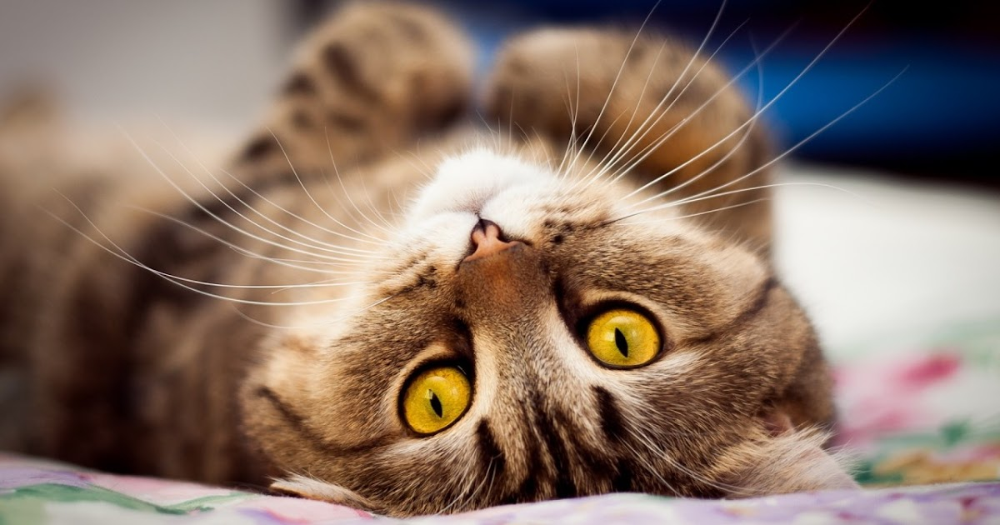

Los gatos domésticos Felis silvestris catus es el nombre científico que se le da a una de las mascotas más populares del mundo, los gatos, también conocidos como gatos domésticos. Los gatos son pequeños mamíferos carnívoros que pertenecen a la familia de los felinos. Se cree que los gatos conviven con los humanos desde hace más de 9000 años. Hay muchas razas de gatos, tal como pasa con el caso de los perros. Algunos ratos bastante llamativos son el gato esfinge que no posee pelaje y el gato Manx que no tiene cola, y por supuesto existen multitud de gatos de distintos colores. Por naturaleza, los gatos son depredadores y entre sus presas se pueden hallar 100 especies diferentes de animales, siendo además un depredador natural de ratones que evita que las poblaciones de estos crezcan en forma desproporcionada. En algunos casos, algunos gatos son entrenados para llevar a cabo tareas simples. Para comunicarse, además del lenguaje corporal, utilizan gemidos y gruñidos. Normalmente, los gatos suelen pesar entre 2kg y 7kg aproximadamente cuando son adultos, aunque algunas razas cuentan con ejemplares de 11kg. Su tiempo de vida media es de entre 14 y 20 años aproximadamente, aunque se dio un caso de un gato que llegó a vivir 36 años. Para saber más, clic AQUÍ